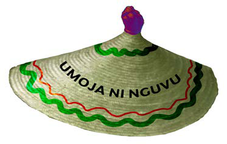

Kazi ya kufanya namba 6
Jadili nafasi chanya na hasi za tamthilia na michezo ya kuigiza katika kukuza na kutunza maadili ya jamii kwa sasa.
Namba ya kirumi ya tano. Ususi. Ususi ulitumika kukuza na kutunza maadili. Wasusi walisuka vitu na kuandika maandishi yenye kusisitiza mila na desturi za jamii. Mfano, maneno kama “umoja ni nguvu”, yalitumika kusisitiza upendo, umoja na ushirikiano. Kielelezo namba 3, kinawasilisha mapambo yenye kutoa ujumbe wa kusisitiza maadili.

Namba ya kirumi ya sita. Ngoma. Jamii zilikuwa na ngoma tofauti, mfano ngoma za sindimba, mdundiko, msewe, mganda, muheme, bugobogobo, ligombe na kadhalika.
Ngoma hizi ziliambatana na nyimbo na dansi zenye kufunza mila na desturi za jamii. Ngoma mbalimbali zilichezwa wakati tofauti ili kuelezea maadili husika. Ngoma za wakati wa sherehe za jando, unyago, harusi, masika, au mavuno zilitofautiana kwa midundo na dansi. Kadiri ngoma zilivyochezwa, ndivyo jamii ilivyojikumbusha maadili ya jamii zao. Viongozi wa jadi walikuwapo kusimamia maadili katika sherehe hizo.